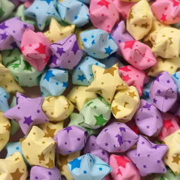
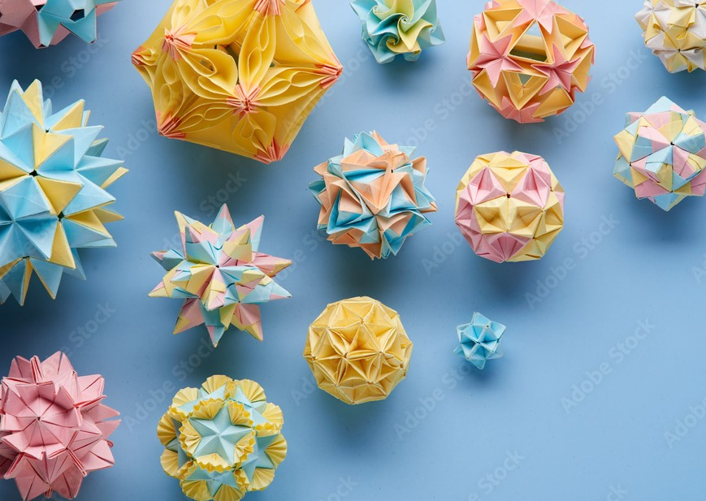
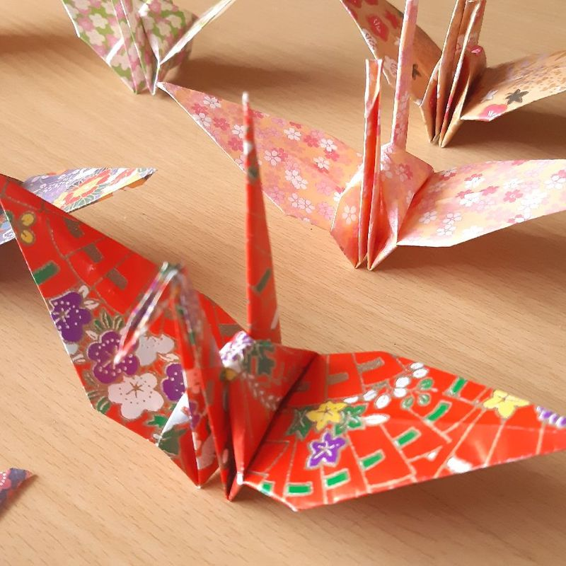

O origami é uma arte oriental que consiste em fazer dobraduras de papel, formando assim pequenas esculturas.
Etimologicamente, a origem da palavra advém das junções dos termos em japonês ori, "dobrar", e kami, "papel".Tradicionalmente, as
figuras representadas são elementos da natureza, como animais e plantas, sendo que cada
um tem um significado específico.
 As Lucky Stars são dobraduras feitas a partir de tiras de papel. Elas são famosas ao redor do mundo por seus significados e dizem realizar desejos. Pode servir para dar de presente, principalmente entre casais tendo em vista que cada quantidade de estrelas feitas simboliza um pedido e os amorosos são os mais importantes.
 KUSUDAMA – Em sua tradução literal, bola de remédio ou bola curativa (kusu= remédio e dama= bola). No Japão, durante a Era Heian (sec. VIII à XII), havia o costume de pendurar saquinhos contendo ervas medicinais sobre a cabeceira das camas dos doentes e crianças, com o intuito de afastar o mal e garantir sua saúde. Com o passar do tempo passaram a ser ornamentados, perfumados e confeccionados com a técnica do Origami. Isso ajudou a desenvolver e popularizar a arte e a tradição. Os cristais e contas simbolizam a energia que sai da Kusudama, como a água que escorre por um fio… Os cordões abaixo servem para distribuir e espalhar a energia, para pessoa e ambiente. Atualmente é usado em comemorações, decoração, presente para pessoas queridas, sempre com o desejo de Saúde, Proteção e Felicidade.
 Tsuru é uma ave sagrada do Japão. É o símbolo da saúde, da boa sorte, felicidade, longevidade e da fortuna. Conta a lenda japonesa que o tsuru pode viver até mil anos. É considerado o pássaro companheiro dos eremitas que se refugiavam nas montanhas para meditar, acreditando possuírem poderes sobrenaturais para não envelhecer. A lenda diz ainda que se a pessoa fizer 1000 tsurus, usando a técnica do origami – arte secular de dobrar o papel, com o pensamento voltado para um desejo, ele poderá se realizar.